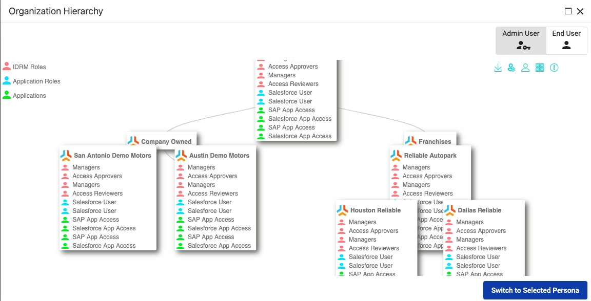
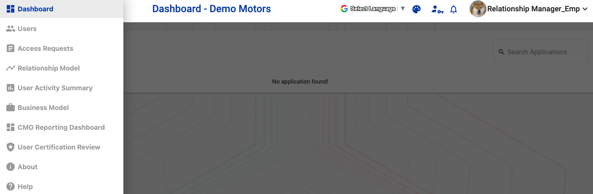
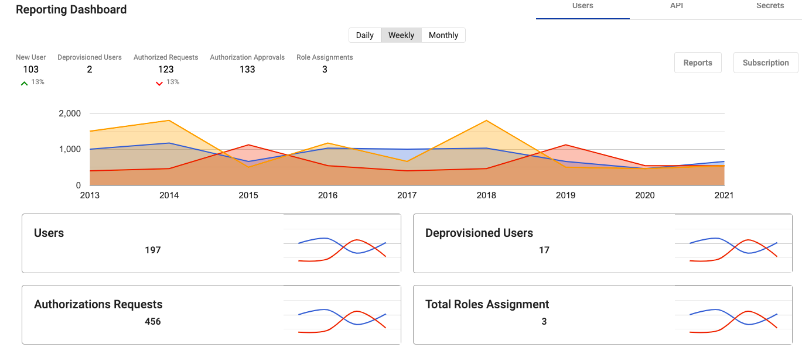
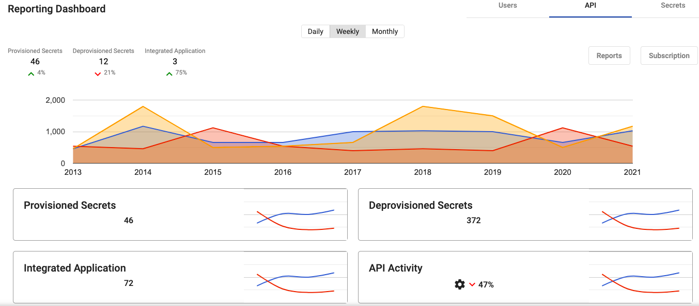
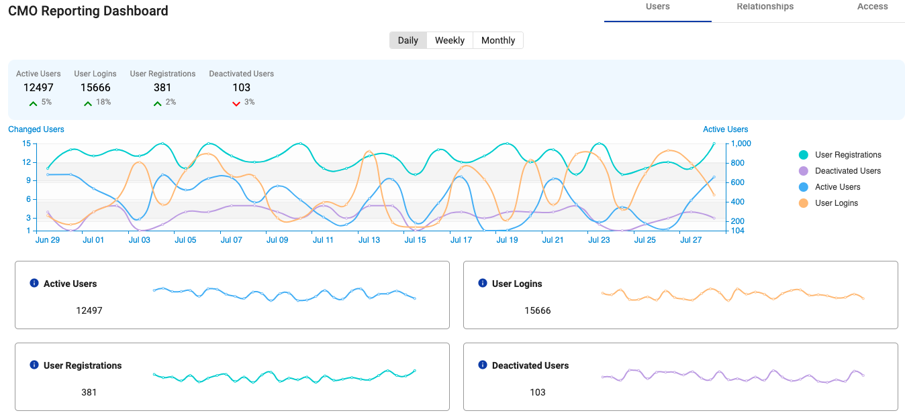
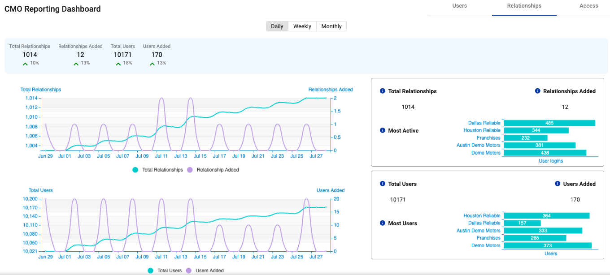
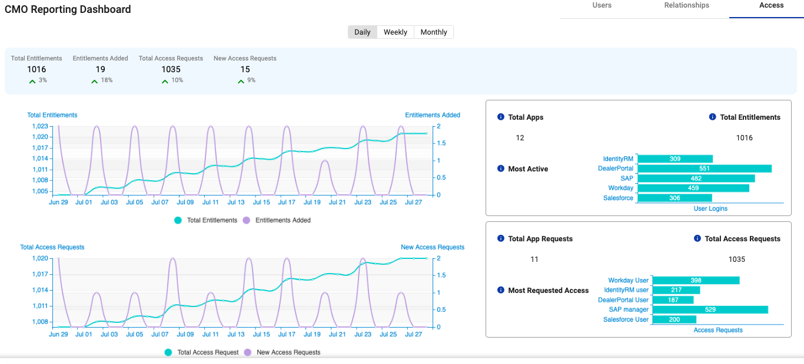

- 1. Introduction
- 2. Exploring the User Interface
- 3. Accessing and Managing Your Profile
- 4. Adding and Managing Users
- 5. Adding and Managing Relationship
- 6. Viewing User Activity Summary
- 7. Delegating User Management
- 8. Creating and Editing a Business Model
- 9. Using Identity Governance
- 10. Using Reporting Dashboard
1. Introduction
IdentityRM is a platform that facilitates digital business transformation. IdentityRM provides an evolved thought process where identities belong to relationships, and relationships become the fundamental managed entity.
Relationships allow you to provide business context and macro layer for managing identity within digital business models.
The IdentityRM portal supplies a platform agnostic interface for end-users and administrators who are not tied to any particular SSO or Identity technology. The portal is built upon the latest web technologies such as Bootstrap 3.0 that is fully responsive and mobile aware.
This guide describes how to use IdentityRM as an administrator and end user.
1.1. Benefits
-
SSO Service: Integrated with industry leading SSO platforms to allow policy-based access single sign-on to SAAS applications such as SalesForce, Office 365 and more.
-
Application Request: Configurable workflows to allow users to request and seek approval for access to applications.
-
User Management: Administration of users by delegated administrators as well as self-service User registration, profile management, and password recovery.
-
Cloud hosted: Deployed in docker containers that can be hosted at AWS, Azure, on-premise or any environment that supports docker containers.
1.2. Accessing IdentityRM
To access IdentityRM, you need to install and then use according to your user persona.
1.2.1. Install IdentityRM
To install IdentityRM, refer to the IdentityRM Installation Guide.
Role Required: Administrator
1.2.2. Log in and access using Designated Persona
To begin using IdentityRM, refer to the IdentityRM Installation Guide.
Role Required: Administrator
Switching Persona With the same login, you can use multiple personas to access IdentityRM. A user persona defines the type of role a user plays in an organization. For example, administrator, end user, network engineer.
Role Required: Administrator or End User
After installation, use your credentials to login and select one of the designated personas. With the same login, you can use multiple personas to access IdentityRM. The access of features in application varies according to the selected persona For example, select administrator or end user.
1.3. Multiple User personas
An organization has different set of users with separate roles assigned. Users with different set of access rights are categorized as a specific user persona. For example, Administrator and Operation User are two different user personas of the same organization.
IdentityRM lets organization manage multiple user personas in a simple way. Organizations decide user personas and IdentityRM makes sure to provide only the assigned access to a user persona while working on the same user interface of the product.
1.3.1. Example Scenario
Let us consider an example. IdentityRM has multiple functions. Some of those are, allowing access to entitlements, creating business models, adding relationship model, managing nodes, creating and managing campaign, managing users, and so on.
An administrator can get access to all the features, while an operational user needs access only to manage own profile and request access to entitlements.
IdentityRM support ensures that multiple user personas use the same user interface to perform respetive tasks at the same time. For example, the operation user can request access for entitlements and administration can review and approve the requests.
1.3.2. Using Multiple User Personas
An organization can have multiple tenants and all tenants also have multiple user personas. Whether you have an organization, business unit, franchise or dealership, at all levels you can define multiple user personas when using IdentityRM.
2. Exploring the User Interface
You can use the latest versions of Chrome, Firefox, and Microsoft Edge to open IdentityRM with all functions. This section helps you understand the navigation and features available in IdentityRM.
Role Required: Administrator or End User
2.1. Landing Page
As you enter the IdentityRM URL on a browser, the landing page displays the following two options:
-
Register: You can create your own account for the portal using the Register option. Select your node, add details, create a password, add security question and answer to secure your account later, and then click Create Account.
-
Login: Click Login and enter the credentials to access IdentityRM.
A successful login displays the following options:
-
Select Persona: A persona defines a level of access to a defined relationship in the organization hierarchy. You can directly select a persona or view organization hierarchy and then select a persona.
Your persona selection defines your access to the portal. For example, if you have two user personas, and you select End user, then you cannot view the features assigned to the portal administrator. Select the desired persona and click Switch to Selected Persona. The dashboard appears.
-
View Hierarchy: Before selecting a persona, you can select View Hierarchy to display a graphical overview of your Organization Hierarchy as an admin or end user.
 -
Other Options: If you are an existing user but do not remember your username or password, click
 ] from the top-left menu. The icon displays options, such as Forgot Username, Forgot Password, Help, and About.
] from the top-left menu. The icon displays options, such as Forgot Username, Forgot Password, Help, and About.
2.2. Dashboard
Role Required: Administrator or End User
A successful login and selection of user persona takes you to the dashboard. You can view multiple options.
-
Applications: The Applications page displays the integrated applications.
-
The pane appears empty if you have not added any applications.
-
If available, then you can either use the Search box to find an application or directly click on the name of the desired application to SSO to that application.
The application opens in a new tab.
-
-
User Profile: The profile of logged-in user appears on the top-right pane. Click the username or drop-down menu options to view details. For details, see [_accessing_and_managing_your_profile].
-
Themes: Select the option from the top menu to change the existing theme of the portal.
-
Language: Select am option and view the application in the selected language.
-
Switch Persona: Click the icon on the top menu to switch your user persona whenever you need.
-
Notifications: The bell icon displays in number the messages that need your attention and are unread.
-
Multiple options: Click
to access multiple options to use IdentityRM.For example:
-
Users: Allows an Administrator to manage users within the assigned organizational scope. For details, see [_manage_users].
-
Access Requests: Displays all the requests created for access. For details, see [_manage_access_request].
-
Relationship Model: Provides a graphical view of the organizational hierarchy. Also, allows the administrator to configure and manage relationships and administrative capabilities. For details, see [_adding_and_managing_relationship].
-
User Activity Summary: Displays the activity details related to the logged-in user, or the impersonated user. For details, see [_viewing_user_activity_summary].
-
Business Model: Provides the capability to create a model template or modify the existing business model templates and then create an operational relationship model from the business model. For details, see [_adding_and_managing_relationship].
-
Reporting Dashboard: A single window to view the activities related to the users, relationships, and access. For details, see [_reporting_dashboard].
-
User Certification Review: Provides Access Reviewers the capability to certify or revoke accounts or access for users in the scope of an access certification campaign. For details, see [_manage_a_campaign].
-
About: View details about IdentityRM.
-
Help: View documentation about how to use IdentityRM.
-
3. Accessing and Managing Your Profile
The users with access to IdentityRM can view their profile from the top-right menu.
Role Required: All users
3.1. Access the Profile
After logging in, click on the user icon, or the role name, or the drop-down options to access your profile. The options vary according to your access level.
3.2. Manage your Profile
Modify the user profile details, request access for entitlements, and change your password to manage your profile.
3.2.1. Edit your Profile
Using the edit profile wizard, view and update details for the following options:
-
Profile: Displays basic user profile details.
-
Applications: Displays the list of applications associated with the profile.
-
Application Roles: Displays the list of application roles associated with the profile.
-
IDRM Roles: Displays the list of IdentityRM roles associated with the profile.
-
Unauthorized access: Displays the list of unauthorized access for the profile. You can view Role and Node of the unauthorized access.
To edit,
-
Go to the Profile on the top-right menu and click the drop-down arrow.
-
Select Edit a Profile from the displayed list of options.
The Edit a Profile wizard displays the tabs of Profile, Applications, Application Roles, IDRM Roles, and Unauthorized access. You can modify respective details.
3.2.2. View Hierarchy
The option to view hierarchy appears when you click Edit a Profile. Click View Hierarchy to see graphical display of the organizational hierarchy. You can view the details about all entitlements and applications.
3.2.3. Manage Entitlements
Use this option to request access for application and roles.
3.2.4. Change Password
Use the option to change your password. From the profile drop-down menu, select Change Password and update.
3.2.5. Change Recovery Questions
The recovery question option adds extra layer of security to your account. Changing the question and answer enhances the security further. From the profile drop-down menu, select Change Recovery Question and update.
3.2.6. Request Access
Use this option when you need access to additional entitlements. From the profile drop-down menu, select Request Access and select Entitlements that you need.
4. Adding and Managing Users
As an administrator, you can add and manage users within your administrative scope.
4.1. Add a user
You can add a user and after approval (if required) the user appears in the user list.
To add,
-
Click Add User and select one of the following options:
-
New User: Add a new profile to your team.
-
Existing User: Add an already existing team member to the selected relationship/organization.
-
-
Perform the following steps to add a new user:
-
Click Add User > New User.
The Create New User page appears.
-
Enter the following details and click Save:
-
Select the desired option for Select Relationship.
Home Relationship is the default node associated with a profile. -
Enter the following details about the user:
-
Username
-
First Name
-
Last Name
-
Display Name
-
Email
-
Phone No.
-
-
-
Select Start Date and Expiration Date to define when the user is enabled.
-
Click Save.
A message confirms successful creation of the user.
-
-
(Optional) To add an existing user as the new user,
-
Click Add User > Existing User.
-
Select the desired user from the Select Existing User dialog box.
-
The Add Existing User page appears with the auto-filled information about the selected user.
+ NOTE: You can modify the details if required. .. Click Save.
+ A message confirms successful creation of the user.
View User Details
The following user details are visible on the Users page:
-
Username, Email, Nodes, Source Directory as provided while adding the user.
-
Last Login to view the last access time of a user.
-
Status to display the functional condition of a user.
4.2. Manage Users
The administrator can perform multiple actions on the Users master page to manage users in the administrator’s scope.
4.2.1. Search a user
The user page displays a list of users that includes own user and delegated users. Use the search filters available on the Users page to find the desired user.
To search,
-
Select type of users using one of the following options:
-
Show All: Displays both type of users, own and delegated.
-
Only Own: Refers to all the users of only your organization.
-
Delegated users: Refers to the users of other organization. For more information, see Delegating User Management.
-
-
Select one of the following filters to Search by:
-
First Name: Refers to the first name entered while adding the user.
-
Last Name: Refers to the last name entered while adding the user.
-
Username: Refers to the username entered while adding the user.
-
Email: Refers to the email ID entered while adding the user.
-
Status: Refers to the status of a user. Select a status type from the drop-down menu.
-
-
Enter details related to the selected criteria.
For example, when looking for a user registered with the name Max Hue, you can select First Name as criteria and enter Max in the Filter field.
The search result displays the matching details.
| To find the status of a user, select the options from the drop-down menu in the Filter field. For other criteria, you need to enter the details. |
4.2.2. Delete a user
You can use global option to delete multiple users or else individual option for one user. To delete multiple users,
-
Select the users from the Users page and click the Delete button above the username field.
-
Click Yes on the confirmation dialog box.
The action deletes all the selected users.
To delete one user,
-
Select the Actions icon for a user from the Users page and click Delete from the displayed list of options.
-
Click Yes on the confirmation dialog box.
The action deletes the selected user.
4.2.3. View Status of a User
The status indicates the functional condition of a user.
Types of Status
-
Active: Indicates that the user can log in and access the assigned applications.
-
Pending: The status indicates that the user has not yet followed the activation link to complete activation.
-
Deleted: Indicates a deleted account. The user account does not exist.
-
Blocked: The user cannot perform any function.
-
Disabled: The user account is not in an active state, and the user cannot log in.
-
Locked Out: The user is not in a state to function.
-
Password Expired: The user needs to reset password before the next login.
-
Account Expired: The date of using the account expired. The user cannot log in.
4.2.4. Impersonate a user
User impersonation is used to simulate logging in as a user to see how the user’s assigned roles are affecting the features and capabilities that they are presented. This feature can help troubleshoot access-related issues.
To impersonate,
-
Select the Actions icon for a user from the Users page and click Impersonate from the displayed list of options.
-
Click Continue on the confirmation dialog box.
The screen is updated. The following changes are visible on the screen:
-
The logged-in username changes. The name of the impersonated user replaces the name of user who impersonates.
-
The top bar displays a message that mentions which user has impersonated whom. The message also provides a link to end impersonation.
-
The screen name displays the terms Impersonated User.
-
The End Impersonation icon replaces the Switch Persona icon on the top menu.
-
To end impersonation, use one of the following options:
-
On the top bar, click on the word here available in the confirmation message about impersonation.
-
On the top menu, click the End Impersonation icon.
The impersonation stops. The details of logged-in user are restored.
4.2.5. View details and Edit Profile
You can view the details of a user, initiate reset password, and change recovery questions for a user. Select the desired option, and you are led to the user details page.
View Details
-
Select the Actions icon for a user from the Users page.
-
Click View Details from the displayed list of options.
You can view the user details.
Reset password
-
Select the Actions icon for a user from the Users page.
-
Click Reset Password from the displayed list of options.
-
Click Yes on the confirmation dialog box.
The status of user changes to Password Expired. The user needs to reset the password before the next login.
Change Recovery Questions
To change,
-
Select the Actions icon for a user from the Users page.
-
Click Change Recovery Questions from the displayed list of options.
The Change Recovery Question page appears.
-
Enter Current Password for authentication.
-
Enter the new Recovery Question and Recovery Answer.
-
Click Submit.
The new recovery question with answer is applied to the user.
4.2.6. Change Access of a user
You can change entitlements for a user.
To change access,
-
Select the Actions icon for a user from the Users page.
-
Click Change Access from the displayed list of options.
The Request Access page appears.
-
Select desired options for Access Type and Node.
As access type, you can opt for All or one of the displayed options, such as Application or IDRM Roles. The entitlements matching your selection appear.
-
From Available Entitlements, select one or more entitlements.
-
Click the icon > or >> to move to the right pane of Your Current Entitlements.
-
Click Request Access.
The request is submitted, and the selected user receives the assigned access after approval (if required).
4.3. Manage Access Request
The request is submitted, and the selected user receives the assigned access after approval (if required.)
4.4. Manage Access Requests
When users request access, Access Approvers approve or reject the access using the options available on the Access Requests page.
The page displays all the access requests with the status. Unless approved, the status displays as unassigned or unapproved. The request contains the information about requester, target user, node name, and a section named Action to manage the requests.
A request displays one of the following status types:
-
Approved: Assigned and approved.
-
Declined: Not approved.
The administrator can view the following details to manage access:
-
Access Request Queue (Assigned/Unassigned)
-
Assign Access (Approve / Decline)

4.4.1. Assign and Approve a Request
Role Required: Access Approver
The Access Approver can assign, reject, or approve a request.
To assign and approve,
-
Log into IdentityRM.
-
Go to the Access Requests page.
-
Select Manage as Action for a request.
-
Click Assign on the Manage Access Request page.
-
Click Approve on the next page.
The status of the request changes to approved or assigned, and the request is no longer visible on the Access Requests page.
5. Adding and Managing Relationship
IdentityRM helps you define relationship partners, customers, or franchises) in your organization. Relationships allow you to provide business context and a macro layer for managing identities associated with these relationships. A user in the Relationship Manager role can update Relationship Models by adding or modifying the relationships/nodes in the organizational hierarchy.
Role Required: Relationship Manager
The relationship for every level is independent, and you can define relationships as per your business requirements. To work with relationship, navigate to the Relationship Model page.
Define the organization relationship based on a model that defines your setup. For example, a Company follows company-owned and Franchise business model. Both can have dealerships at the next level.
Sample flow: Company>Company-owned / Franchises>Dealership
From the Relationship Model page, you can add a node and manage.
5.1. Add a new child node
You can add multiple child nodes.
To add,
-
Click + for the existing node or section.
-
On the New Node screen, enter the following details and click Save:
-
Name: Enter a unique name.
-
Node Type: Select a node type. The drop-down menu displays the existing node types.
-
User Source: Select a directory from the drop-down menu.
-
Dashboard Service: Select a service from the drop-down menu.
-
Expiration Date: Select a date or opt for Never Expire.
-
User Quota: Enter a number to assign number of users for the node.
-
5.2. Manage a Node
Role Required: Administrator or End User
Perform the following actions on an existing node:
-
Search: Use the option to find a node from the available list. To search, enter the term in the search box to locate a node.
-
Toggle: Expand all the nodes using the Toggle All option.
-
Preview Hierarchy: View the organization hierarchy for the available tenant. To preview, click the icon of Preview Hierarchy.
-
Start campaign: Start a campaign for the desired node directly from the Relationship Model page. For details, see Start a campaign.
-
View Node: Click a node to view the details in the right pane.
-
Edit Node: You can modify details of an existing node. To edit, select the desired node. Click the edit icon on the right pane where the details of the selected node appear.
-
Delete Node: Remove a node when not required, using the Delete option. To remove, select the delete icon visible in front of a node on the left pane.
5.3. Start a campaign
You can start multiple campaigns for a node to certify accounts or access for a user. You can also perform certification review of inactive accounts. From the Relationship Model page, click the icon of start campaign to run a campaign. For details, refer to [_run_a_campaign].
To view the active campaigns, click View Active Campaigns against the name of a node in the Relationship Model page.
6. Viewing User Activity Summary
The User Activity Summary dashboard is a one-stop page to view all information and activities related to and in the administrative scope of the logged-in user.
Role Required: Administrator

Information Available on the dashboard
-
Admin Hierarchy: This graphical view shows the relationships/nodes in the administrative scope of the logged-in user. You can click to open the organization hierarchy on a separate screen.
-
Managed Applications: This section lists all the applications that the user manages.
-
Sign in Activity: A graphical view displays number of daily user logins.
-
Request Activity: A graphical view to display the number of daily access requests.
-
User Info: The section displays the key information about the logged-in user. For example, Type of user and display ID.
-
Workflow: Displays the number of requests, notifications, tasks, and History. Click on any number to view details in a separate related page.
-
User Account Status: Tabular display of the overall status of the user accounts in scope. Click on any number to view details in a separate related page.
-
Notifications: Displays the News and Alerts for the user. Click to view details in a separate related page.
7. Delegating User Management
IdentityRM lets the administrator of one organization manage access assigned to users from other organization. This feature helps to delegate access management of users to the delegated organization.
For example, let us consider two organizations as Org A and Org B. Both the organizations are part of the Relationship model. Org A needs Org B administrators to be able to assign access to Org B applications to Org A users. Org A uses the delegated organization feature to delegate user management to the administrator of Org B. The Org B administrator cannot manage the Org A user in any other way (For example, Reset password)
7.1. Key Terms
-
Delegated Organization: An organization that helps other organization manage users. For example, Org B from the above example is the delegated organization.
-
Delegated User: The users of other organization whom the administrator of the delegated organization manages are referred to as delegated users. For example, users of Org A are delegated users for Org B.
| This feature allows administrators of delegated organization to manage only access of the delegated users. The administrators can assign roles and request access. |
7.2. Delegate user management
Delegating user management involves assigning delegated organization and managing delegated users.
7.2.1. Assign Delegated organizations
The administrator can delegate user management to another organization from the Relationship Model page.
To assign,
-
Go to Relationship model.
-
Select an organization (a node) from the left pane.
-
Click the Edit Node icon from the right pane.
-
On the Edit Node screen, select another organization from the drop-down list of Delegated Organizations.
-
Click Save.
The user management is delegated to the selected organization.
7.2.2. Managing Delegated users
The administrators of the delegated organization can manage the delegated users from their own user master screen.
To manage,
-
Log in as an administrator of the delegated organization.
-
Navigate to Users.
The list displays own and delegated users.
-
Select Delegated users as the user type.
-
Click the icon of Action for the desired delegated user and select Change Access.
The Request User Access screen appears.
-
Assign Entitlements to the user and click Request Access.
-
Click Confirm on the Confirm Request dialog box.
The administrator of delegated organization submits the access request for approval. The administrator of assignee organization can approve the requested access for the delegated users.
8. Creating and Editing a Business Model
Using IdentityRM, you can set up relationships for your business models to run the operations effectively.
Role Required: Super Administrator
Business model forms the framework for configuring an operational relationship model. You can use an existing template or create your own to define a model that suits your requirement.
To start with, add a template and create category from the Business Model page.

8.1. Benefits of Business Model
8.1.1. Perform multiple actions on Added Template
You can perform the following actions on the added templates:
-
Edit a template: You can update the name, category, model image, and description of an existing template. Select the edit icon on the desired template and modify on the Edit Template page.
-
Create Relationship Model: Add a tenant and other details to create a relationship model. Select the Create Relationship Model icon on the desired template and add details on the Create Relationship Model dialog box.
-
Preview a template: View how the template appears. Select the Preview icon on the desired template, and the NodeType Configuration Preview dialog box appears.
-
Clone a model: To add a template, you can either add a new one or else clone an existing template. From the preview dialog box of NodeType Configuration, click Clone Template and modify details to add a new template.
-
Add Node: You can also add a new node to the existing template. From the preview dialog box of NodeType Configuration, click Add Node and add details to prepare a new node.
8.1.2. Create Categories
The Category section on the left pane displays all the categories that you have added. You can differentiate requirements into multiple categories. For example, Franchise, Service Provider, Healthcare, Manufacturing or Retail. For every category, you can create customized templates.
You add a new category while adding a template. One category can have multiple templates.
8.1.3. Search Template
Every category provides the search option to find desired templates. Enter the name of template and search result displays the matching template.
8.2. Workflow to implement Business model

8.3. Create a Business model
Use the pre-defined models or create your own template for different categories of your business. Create relationship models and assign entitlements to configure the business model.
To add a template, you can either create one or clone the desired existing template.
8.3.1. Create a Template
To create templates, you can either add a new template or clone an existing template and rename it.
Add a template
To add,
-
Click Add Template on the Business Model page.
-
On the Add New Template, perform the following steps:
-
Enter a unique Name for your template.
-
Enter a unique name for Category.
You can select same category for multiple templates. -
Select a template model as Image.
-
Enter details as Description to define the purpose.
-
Click Save. The Business Model page displays the category name and template is visible when you select that category.
-
Clone a Template
To clone,
-
Click Preview Template for the desired template.
-
Click Clone on the page.
The template appears with the cloned name under the same category. -
Click Edit Template and rename the template as desired.
You can also modify other attributes of the cloned template.
8.3.2. Create Relationship Model
Creating a Relationship Model adds a separate IdentityRM tenant, a Relationship Model with a single root node, and a user with the Relationship Manager role.
Hover over the added template and click the icon of Create Relationship model.
To create,
-
Hover over the template and click the icon of Create Relationship Model.
Create Relationship Model dialog box appears. -
Enter the following details:
-
Tenant Name: Define name of the tenant for the relationship.
-
Domain: Refers to a valid domain related to the tenant.
-
User Source: Refers to the source of the defined user.
-
Dashboard Service: Select from the available list.
-
Relationship Manager: Select an existing user or click Add a User to create. For details about, see [_add_a_user].
-
IDRM Roles: Select an IDRM role from the available list.
-
-
Click Create.
The relationship model is created in the new IdentityRM tenant..
8.3.3. Configure Template
You need to configure entitlements and node for the business model.
To configure,
-
Hover over the template and click the icon of Preview Template.
NodeType Configuration preview dialog box appears. You need to configure for IDRM Roles, Application Roles, and Applications access. To enhance the business model, you can also add more nodes and configure. -
On the right pane, click the Edit icon for IDRM Roles and perform the following:
-
On the right pane, click the Edit icon for Application Roles and perform the following:
-
On the right pane, click the Edit icon for Applications and perform the following:
-
Click Add Node.
The Edit NodeType Details page is displayed. You can click Delete to remove the node or else update the details.
-
Add the following details to update the information for node and click Save:
-
Name: Refers to the name of the node.
-
Label: Refers to the display name.
-
Description: Enter details to explain the scope of node.
-
Icon: Assign the desired icon to the node.
-
IDRM Roles: Select from the available options or assign.
-
Application Roles: Select from the available options or assign.
-
Application: Select from the available options or add.
-
Allowed ancestors: Select the existing nodes from the available options. The node appears below the selected ancestors.
-
Allowed metadata: Add desired metadata.
The node appears on the page of the related Business Model template.
-
After creating the business model, you need to complete integration.
8.4. Integrate IDRM with IDP
You can integrate IDRM with your IDP, for example Okta.
8.4.1. Configure IDP for IDRM
<Tony: Detailed STEPS required>
8.4.2. Integrate IDRM with IDP Tenant
<Tony: Detailed STEPS required>
9. Using Identity Governance
Straightforward Identity Governance features are implemented to allow administrators and access reviewers conduct routine security and authorization checks for users associated with defined relationships within the hierarchy. You can start the campaign from the Relationship Model page and monitor progress from the User Certification Review page.
9.1. Run a Campaign
A campaign is useful for multiple types of validations. For example, account or access certification. To start a campaign, navigate to the Relationship Model.
To start a campaign,
-
On the Relationship Model page, select the node from the left pane and click the icon for Start Campaign.
-
On the Start Campaign screen, enter the following details:
-
Select the desired node from the Start Node drop-down menu.
The name of node appears if you have already selected the node. You can modify and select other node. -
Select one of the following types of campaigns:
-
Account certification: Verifies the authenticity of certifications available for accounts.
-
Access certification: Verifies the available certifications for access rights.
-
Account Inactivity Certification: Verifies the users who are not active for a specific duration and allows reviewers to certify or revoke access.
-
-
Select start and end dates for the campaign.
By default, the current date appears as the start date. You can modify.
-
-
Click Start campaign.
A message confirms that the campaign started. Navigate to User Certification Review to view the progress and results.
9.2. Manage a campaign
The campaigns that you create from the Relationships Model page are visible on the User Certification Review page.
Role Required: Access Reviewer
The page lists all the campaigns. The campaigns are generally related to Account certification, Access certification, and Account Inactivity certification.
The User Access Certification Campaigns page lists the status and other details about the campaign.
Details of campaign:
-
Campaign ID: Refers to the system-generated ID for a campaign.
-
Name: Refers to the name you mention while adding a campaign. For example, Account certification and Access certification. Click on the name to view details about the campaign and take further action if required from the User Action Review page.
-
Description: Displays name of the campaign.
-
Comment: Displays description about the campaign.
-
Node: Refers to the node related to the campaign.
-
Start: Displays the start date of the campaign.
-
End: Displays the completion date of the campaign.
-
Review Progress: Displays the number of participants. For example, 5/50 indicates that 5 out of 50 have participated in the campaign.
-
Status: A campaign displays either Active or Closed status.
9.2.1. User Account or Access Review
The User Account or Access Review page displays the details about the campaign and also displays list of usernames who are identified as part of the campaign. For every displayed username, you can view the status and take further action, such as, certify, escalate and revoke.
| User Account Review page appears for Account status and Account Inactive certification campaigs. For Access Review certificate campaigns, Access Review page appears. |
On a User account or access review page, you can:
-
View summary of a campaign
-
Search a user by username. Enter the name of a user, select filters and search for the desired user.
-
View details about the users listed in the campaign.
-
Take action against the users appearing in the campaign.
View summary of a campaign
The summary section on top displays details entered while starting the campaign and Review Progress in numbers. For example, related node, ID, description, start date and end date of a campaign.
Review Progress shows how many users have participated in the campaign. For example, 20/50 against review progress indicates that out of the expected list of 50 only 20 usernames participated.
Take Action against a user
The reviewer can take global action on multiple users or individual action only on one user.
To take global action:
-
Select names of more than one user from Username.
-
Select action type from the drop-down of Action available above user details list and perform one of the following:
-
Select Certify and click certify selected entry.
-
Select Revoke and click revoke selected entry.
-
Select Escalate and click escalate selected entry.
The Add review comment pop-up appears.
-
-
Enter comments to justify the selected action and click Submit.
A confirmation message confirms successful completion of the action on all the selected users.
To take individual action:
-
Navigate to the Action column against a username.
-
Click the icon of action and click the desired option from one of the following:
-
Certify
-
Revoke
-
Escalate
The Add review comment pop-up appears.
-
-
Enter comments to justify the selected action and click Submit.
A confirmation message confirms successful completion of the action.
View User details
View the details about the users selected as part of the campaign. The following details and status are visible:
-
Username: Displays the name of the user.
-
Email: Displays the registered email ID of the user.
-
Nodes: Displays the name of related node for which the campaign is created.
-
Last Login: Displays the date when the user logged in for the last time.
-
Status: Displays the status of the account. (TONY: Please clarify and differentiate with User status)
-
User Status: Displays the status of a user account. The status has multiple options. For example, Active, Disabled, and Account Expired.
-
Action: Displays multiple options for reviewers to take desired action against the user.
10. Using Reporting Dashboard
Comment-tony This section needs to be updated when Sonika completes IDRM-996
IdentityRM provides two types of reporting dashboard to help you view related historical details at a single screen.
Comment-tony This section needs to be updated when Sonika completes IDRM-996
10.1. Reporting Dashboard
The reporting dashboard provides details about the Secrets, API, and user logistics, such as count, provisioning, and authorization. You can view daily, weekly, and monthly reports.
Role Required: Administrator or End User
Key Highlights
-
Users: Displays User count, new users, deprovisioned, authorized requests, authorization approvals, and total role assignment.
 -
API: View provisioned and unprovisioned secrets, API activity, and integrated applications.
 -
Secrets: View password rotations, failed heartbeats, credential usage, and new discovery.

-
Reports:
-
Subscription:
10.2. CMO Reporting Dashboard
The reporting dashboard provides details about the existing users, relationships, and access requests. You can view daily, weekly, and monthly reports.
Role Required: Administrator
Key Highlights
-
Users: Displays active users, user logins, user registrations, and deactivated users.
 -
Relationships: View total relationships and users, added relationships and users.
 -
Access: View total Entitlements, added entitlements, total access requests, and new access requests.
